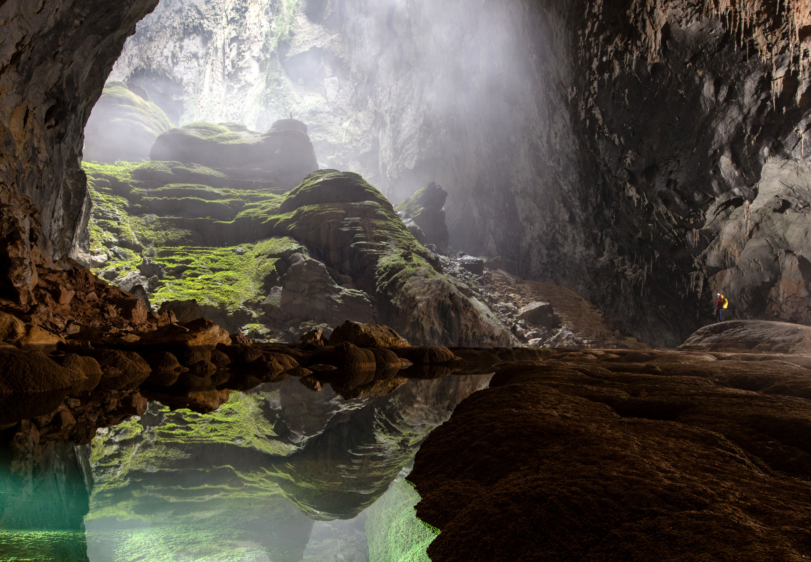

Hang Sơn Đoòng
(Hình Ảnh "Hang Sơn Đoòng")
HANG SƠN ĐOÒNG – HANG ĐỘNG LỚN NHẤT THẾ GIỚI Hang Sơn Đoòng – tọa độ 17°27’25.88″Bắc 106°17’15.36″Đông , tại xã Sơn Trạch huyện Bố Trạch tỉnh Quảng Bình– là hang động tự nhiên lớn nhất thế giới. Hang này nằm trong quần thể hang động Phong Nha – Kẻ Bàng. Hang là một phần của hệ thống ngầm nối với hơn 150 động khác ở Việt Nam tọa lạc gần biên giới với Lào. Hang Sơn Đoòng được đánh giá là một bức tranh “Hoành tráng, đẹp đến mức kinh ngạc” với nhiều thạch nhũ có hình thù kỳ lạ,điều đặc biệt nhất có điểm chứa cả rừng cây nguyên sinh đang phát triển ở trong lòng hang. Các nhà khoa học địa chất thế giới nhận định Sơn Đoòng là hang động kỳ vĩ nhất thế giới. Hang Sơn Đoòng được khám phá vào năm 1991 khi Hồ Khanh, một người dân địa phương tình cờ tìm ra khi lánh vào cửa hang để tránh mưa. Sau một thời gian đến năm 2006 khi đoàn thám hiểm Hiệp hội Hang động Hoàng gia Anh đến khu vực này thăm dò thì Hồ Khanh mới báo cho họ. Phải khó khăn lắm ông mới tìm lại được cửa hang vốn nằm sâu trong rừng già với địa hình khá hiểm trở, cách xa đường lớn và không thể phát hiện thấy trên Google Earth và chính ông cũng đã đặt tên cho hang động này. Với sự kiện ngày 5.4.2009, sau khi tìm thấy và khám phá hang Sơn Đoòng đoàn thám hiểm Hoàng gia Anh đã làm chấn động cả thế giới. Việc tìm ra hang Sơn Đoòng được ví như việc tìm thấy đỉnh núi Everest dưới lòng đất. Tiến sĩ Howard Limbert vừa mới công bố hang mới ở Việt Nam, hang Sơn Đoòng, hang động mà đoàn thám hiểm khẳng định là lớn nhất thế giới, nhiều tờ báo lớn ở nước ngoài như Daily Mail, Telegraph, The Sun, Breitbart, Newser… đồng loạt đăng tải về hang Sơn Đoòng. Đoàn thám hiểm Hoàng gia Anh cũng đã dành vinh dự cho Hồ Khanh đặt tên hang này. Tờ Daily Mail đã chạy tít lớn trên trang nhất “Các nhà thám hiểm người Anh tìm thấy ánh sáng cuối đường hầm… trong hang động lớn nhất thế giới”, còn tờ Telegraph ghi nhận những đóng góp của Hồ Khanh – người dẫn đường cho đoàn thám hiểm vào vùng Đoòng để phát hiện hang Sơn Đoòng. Và hang Sơn Đoòng chào đón hàng chục đoàn làm phim của các hãng truyền thông nổi tiếng trên thế giới từ Anh, Đức, Nhật, Mỹ… đến quảng bá hình ảnh hang động này ra khắp thế giới. Ở hang Sơn Đoòng khoang hang lớn nhất dài hơn 6 km, cao 150 m và rộng 200 m. Nhờ vậy, Sơn Ðoòng vượt qua hang Deer, Vườn quốc gia Gunnung Mulu ở Malaysia để trở thành hang động lớn nhất thế giới. Hang này có hệ thống thạch nhũ tuyệt đẹp với những hình ảnh về “vườn địa đàng” trong lòng hang, hay bộ sưu tập “ngọc trai” hàng vạn năm tuổi. Và chính việc tìm thấy, khám phá và công bố hang Sơn Đoòng đã đưa vùng hang động Phong Nha – Kẻ Bàng trở thành vương quốc hang động lừng lẫy thế giới.
(Hình Ảnh Sơ Đồ Hang)
Lối vào hang Sơn Đoòng: “Mặc dù đây là những hang động vô cùng lớn, nhưng chúng gần như vô hình cho đến khi bạn ở ngay trước chúng”, một nhà thám hiểm nhận xét. Các thợ săn đã phát hiện ra chúng khi thấy gió hắt lên từ những cửa hang dưới lòng đất. Nếu bạn là người đam mê nhiếp ảnh, thì đây quả là điều tuyệt vời.Đường đi từ cửa vào hang có độ dốc lớn, xuống rất khó khăn và phải đi dọc theo một con sông ngầm nước chảy xiết để vào sâu trong hang
Đoạn hang có bề rộng khoảng 92m, với vòm rộng gần 244m này trong Sơn Đoòng có thể chứa được cả một tòa nhà cao 40 tầng ở New York, Mỹ. Các cấu trúc ở đây to lớn, hùng vĩ hơn bất cứ sự tưởng tượng nào của con người. Nơi rộng nhất của hang Sơn Đoòng được ông Howard Limbert thuyết trình rằng ba chiếc máy bay cỡ lớn có thể cùng bay hàng ba thoải mái.
(Hình Ảnh "Đường Trong Hang")
Hang Sơn Đoòng được hình thành khoảng 2-5 triệu năm trước, khi nước sông chảy ngang qua vùng đá vôi đã bị vùi lấp dọc theo một đường đứt gãy. Dòng nước làm soi mòn và nạo ra một đường hầm khổng lồ trong lòng đất dưới dãy núi. Tại những nơi đá mềm, phần trần sụp xuống tạo thành những lỗ hổng, lâu ngày thành vòm hang khổng lồ. ”Hồ bơi” khổng lồ, trong và sâu thăm thẳm trong hang.Đây là nơi trú ngụ lý tưởng của nhiều loài thực vật, sinh vật tự nhiên.Đâu đó bạn sẽ nghe tiếng chim hót líu lo dưới rừng cây, tiếng nước chảy bên khe núi thật ấn tượng và hùng vĩ, một vùng mênh mông .Trong khu vực vườn địa đàng, các nhà khoa học đoàn thám hiểm đã tìm ra ba loài mới về cuốn chiếu, rận gỗ và một loài giáp xác khác. Ở khu rừng, có đến gần 400 loài thực vật, trong đó có những loài chim phía ngoài di cư vào sinh sống rất đẹp và lạ mắt.
Hang động ngọc trai trong hồ sân thượng được phơi khô, nét đẹp không thể tin nổi cảnh trong hang Sơn Đoòng. Cấu trúc tự nhiên qua hàng vạn năm, tinh thể canxi đã bao bọc những hạt cát nhỏ để tạo thành những “viên ngọc trai” quý hiếm. “Bộ sưu tập ngọc trai” vô giá này nằm gần Vườn địa đàng trong hang Sơn Đoòng.
Bạn hãy đến Hang Sơn Đoòng , để cùng khám phá hang động kỳ vỹ nhất thế giới này. Bạn sẻ được hòa mình vào rừng núi thiên nhiên nguyên sơ , tiếng chim rừng líu lo, tiếng suối chảy róc rách, tiếng gió xào xạc của Di sản Thiên nhiên thế giới vườn quốc gia Phong Nha – Kẻ Bàng kết hợp với các hoạt động như cắm trại, câu cá , tắm suối quan sát Voọc , tham quan bản Đoòng một bảng làng vùng cao cảm nhận những nét sinh hoạt vẫn còn rất hoang sơ của người dân tộc trong lòng di sản thưởng thức những món ăn đặc sản của người dân địa phương thật sự là một trải nghiệm thú vị không bao giờ quên.
Khám Phá Việt Nam
Với những thông tin trên website,hi vọng sẽ giúp các bạn hiểu hơn về những địa danh nổi tiếng của Việt Nam.
Trở Lại Đầu Trang